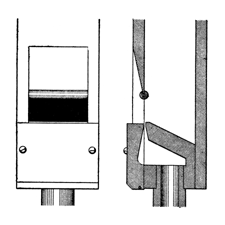

|
Suave Flute English |
|
Audsley lists this stop in his dictionary of organ stops with the accompanying illustration and the following description:
 A name, sugested by the Latin suavis - sweet, pleasant; and which we have considered appropriate for a flute-toned stop of peculiar formation, and of singularly smooth and agreeable tonation. The pipes of the stop are of wood, open, and of medium scale; their peculiarity obtaining in the formation of the mouth, the upper lip pof which has a cylindrical piece of polished hard wood attached to it. This form of mouth clearly demonstrates the value of the thick and rounded upper lip in the production of smooth and full flute-tone. Organ-builders of today have resorted to the easy, objectionable, and perishable expedient of covering the upper lip with leather in both metal and wood pipes. It is a cheap expedient to save labor and care in voicing.
In The Art of Organ-Building Audsley equates this stop with the Suabe Flute, saying that the latter �could be properly called Suave Flute�. In his stop dictionary, published some years later, he lists both stops separately. Irwin also lists it, saying:
An open wooden Flute of 8' or 4' on the manuals, of moderate scale and a soft volume, and a tone color that may be described as smooth (without peaks of loudness in the harmonics), dulcet (with a pleasing balance between the lowest four harmonics), and comparatively dull (of about twelve to sixteen partials). The high upper lips are rounded and very thick to discourage formation of the higher partials.
Suave Flute 8', 4', Orchestral; Cadet Chapel, United States Military Academy, West Point, New York, USA; Moller.
Suave Flute 4', Choir; Ballywillan Presbyterian Church, Portrush, Co. Antrim, Northern Ireland; various from 1958.
|
Original website compiled by Edward L. Stauff. For educational use only. SuaveFlute.html - Last updated 8 January 2001. |
Home Full Index |